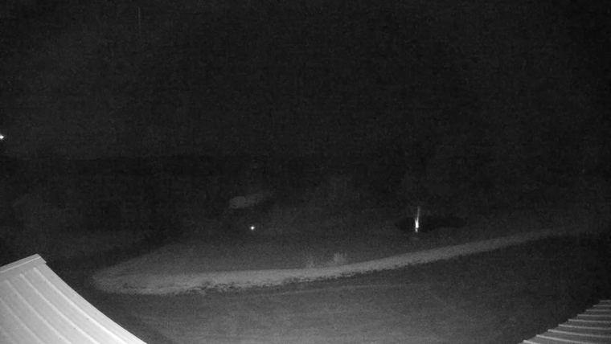
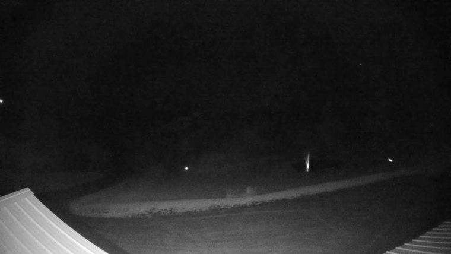
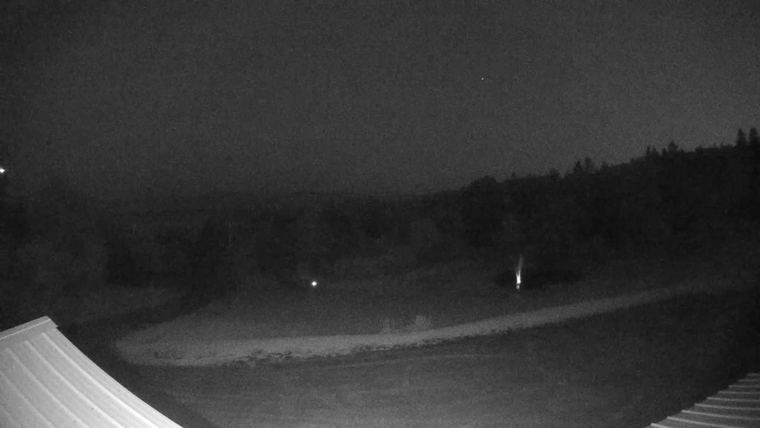
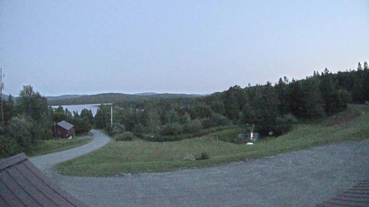
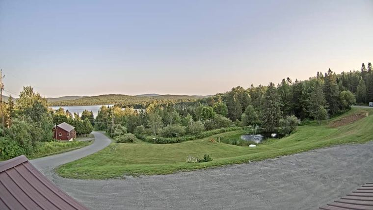
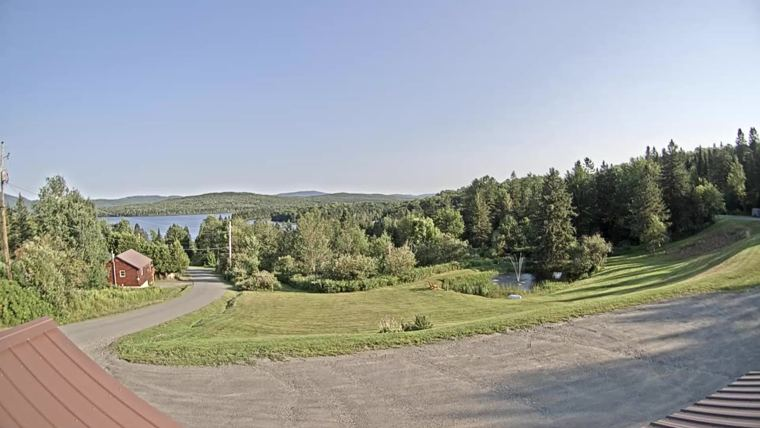
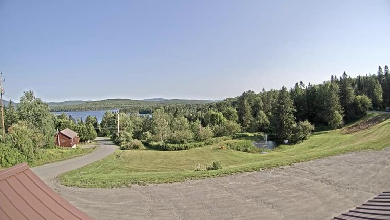

Forecast trend
Cloud cover. Core window 10–11:30 PM decides go/no-go; 1–4 AM is Perseids and the scope. Each point is one forecast run.
chance at least one of the three nights has a usable core window — a better draw than these dates usually give (70%).
Same question at five standards. The headline uses 30% — shootable, though you would lose frames. Ask for a night you would actually drive four hours for and the answer is materially lower.
Per night, at 30%
Counted across 103 ensemble members (ECMWF ENS 51, GEFS 31, GEM ENS 21). Each member is one physically consistent scenario spanning all three nights. You do not need a particular night — you need one of them.
How much do the nights move together? Measured correlation between members is -0.05, so the nights are behaving almost independently and this figure sits right on the independence bound of 82%. That is worth stating because it could be an artefact of the ensemble spreading out at long range — except thirty years of real Augusts here give a correlation of +0.04 and a joint one point off their own independence bound. These dates genuinely are near-independent; three days is long enough for a system to pass. If the nights were locked together the answer would be 44% instead.
That 70% base rate is measured over 30 years of Aug 11-13 at this site. A typical year here is 65% cloud in the core window, and only 34% of individual nights beat 30% — two nights in three are historically unusable. These dates are a gamble every year; the question is only whether this year is a better or worse draw.
Smoke is in the region. Aug 07 forecasts an aerosol depth of 0.44, against 0.3 for a visibly milky sky, and 1 other lead-up night is also over. The trip nights cannot be checked yet — the aerosol forecast runs about five days, so 11–13 Aug come into range around the 7th. Cloud cover reads 0% straight through smoke, so a clear-looking night can still be a low-contrast one.
Median of AIFS, ECMWF, GEM, GFS, ICON, JMA, NWS, weighted equally. The number under each night is the middle opinion, not an average — one model going rogue moves the range, not the verdict. HRRR, UKMO do not forecast this far out yet and will join nearer the date.
Lower is better. Dot & line = consensus · pale bar = source spread. Bars getting shorter = consensus forming.
How much each night has moved
| Night | First | Latest | Change | Each step | Range | Model spread |
|---|---|---|---|---|---|---|
| Night 1 | 54% | 18% | ↓ 36 | ↓↓→↓→→↓→→↑↓→→→→↑↓ | 36 | ±59 → ±82 |
| Night 2 | 56% | 30% | ↓ 26 | →↓→↓→→→→→↑↓→→→→→→ | 26 | ±54 → ±60 |
| Night 3 | 58% | 58% | → 0 | →→→→→→→→→→→→→→→→→ | 0 | ±82 → ±87 |
Ground truth — satellite and webcam
Can the core actually be seen? see the frames →
The webcam is pointed at your targets — solved from its own star field to bearing 178.5°, 94° wide. The Milky Way core sits at 0.9° altitude in that frame, Rho Ophiuchi at -6.3°. Same sky, 16.6 km away.
Wed 05 Aug 01:15 — nothing coming through in the core region. 0 sources above threshold, brightest 4× the noise.
One bar per capture through the night, height is light collected in the core region. Rho currently reads flux 0 — that region contains Antares, so it is the steadiest anchor: it should hold all night under clear sky and collapse the moment cloud crosses it.
Cross-check against the satellite: the two agree on 11 of 15 hours (73%). Both are sampled over the camera, so a mismatch is not the 16.6 km between them. Of the rest: 4 where the satellite called it clear but no stars came through — low cloud or fog, which infrared cannot see.
Why this beats a cloud percentage: it is the only reading here that measures the actual target sky rather than the whole dome, and the only one that works on the low cloud infrared struggles with. Calibrated on the night of 4 Aug, the one fully dark night before the trip.
Your whole southern programme lives between azimuth 177° and 232°. the southern slot is open
0% cloud upwind — 30–90 km out on the 74° flow, which is roughly what arrives overhead in the next hour.
Left: cloud in the southern slot by distance — near cloud blocks low altitudes, far cloud blocks the cirrus band. Right: cloud by compass octant, south-west highlighted because that is where the core sits.
Left of the marker is what the satellite saw; right of it is HRRR. Watch south-west — that is the core. Cloud arriving there before it arrives overhead is your warning.
What was actually overhead, hour by hour — including after dark, which the camera cannot see. This is what the models get marked against.
Lopstick, First Connecticut Lake — 16.6 km SSW of the site. Hourly frame, cloud estimated, compared against what each model said for that hour.
Live — needs a connection. Frames below are archived.
| Model | Checks | Mean error vs camera |
|---|---|---|
| GFS | 15 | 0 pts |
| GEM | 15 | 0 pts |
| JMA | 10 | 0 pts |
| ECMWF | 15 | 1 pts |
| ICON | 15 | 1 pts |
| AIFS | 10 | 1 pts |
Not yet a ranking. 15 scored frames spanning 0 points of cloud — a winner needs at least 12 frames across 30 points. Under a steady clear sky every model looks perfect and the order is noise.
Hour by hour, forecast above the photo

0%
0%
0%
0%
0%
0%cam 0%
0%cam 0% 0%cam 0%
0%cam 0% 0%cam 0%
0%cam 0% 0%cam 0%
0%cam 0%Above each photo, what the models forecast for that hour. Below it, what the satellite saw — within 15 / 30 / beyond. The camera's own estimate appears only where the sun was high enough for it to be trustworthy; at dusk a reddened sky reads as cloud, so those numbers are withheld rather than shown and disbelieved.
Hour by hour
Darker = more cloud. Rows are sources.
EDT, 6 PM–7 AM. Amber box = core window. Dashed = no data.
Do the models agree?
Dots = each source · bar = range · ◇ = consensus median · shaded = under 30%
Calibration — the nights before the trip
Nights before the trip, which verify while you watch — so this measures how far a forecast actually travels in this pattern.
Worst swing so far: 46 points (typical 30). You are asking how wrong a forecast could be — a tail question — so the worst case is the honest number and the mean understates it. A night reading 45% four days out could plausibly land anywhere within ±46 of that.
The observed column fills in the morning after each lead-up night, once the webcam has frames spanning it.
| Night | Lead | First | Latest | Swing | Observed | Miss |
|---|---|---|---|---|---|---|
| Wed 05 Aug | 1d → 0d | 16% | 32% | 31 | — | — |
| Thu 06 Aug | 2d → 1d | 54% | 67% | 33 | — | — |
| Fri 07 Aug | 3d → 2d | 92% | 77% | 17 | — | — |
| Sat 08 Aug | 4d → 3d | 66% | 63% | 24 | — | — |
| Sun 09 Aug | 5d → 4d | 56% | 10% | 46 | — | — |
| Mon 10 Aug | 6d → 5d | 66% | 59% | 32 | — | — |
Observed is the webcam at Lopstick on First Connecticut Lake, 16.6 km SSW of the shooting site. Cloud can only be scored while the sun is more than 15° up, so this is the last trustworthy look before dark and the first after dawn — a bracket around the night, not a measurement of it. Frames nearer sunset and sunrise are discarded: a low sun reddens the whole sky, and the red/blue test then reads clear air as overcast. Hover a value for the usable frame count.
What the percentage means
Percent of sky covered by cloud — not a probability. PoP is a different quantity and doesn't matter here.
| Sky cover | NWS wording | For you |
|---|---|---|
| 0–12% | Clear | Everything works |
| 13–37% | Mostly clear | Shootable — might lose a few frames |
| 38–62% | Partly cloudy | Broken. You'd get gaps — OH_SHIT territory |
| 63–87% | Mostly cloudy | Occasional sucker holes |
| 88–100% | Overcast | Nothing |
Threshold 30% sits inside "mostly clear" (13–37%), deliberately short of its top. Caveat: it's a whole-dome average and can't say where the cloud is.
Does waiting help?
Mean error against the satellite, by how far ahead the forecast was made. Bars show the 95% interval.
Waiting from seven days out to three gains 18 points of accuracy (95% CI +9 to +24) — a real effect, comfortably clear of the noise.
Past about five days, waiting buys nothing measurable. Three days out to the night itself moves the error by +1 points, but the interval is -8 to +10 — it straddles zero, so the honest statement is that no improvement can be detected at this sample size. The bars show it: one day out scores better than the night itself, which cannot be real and sets the noise floor at roughly ±6 points.
Typical error is far lower than the mean — the median at three days is 8.0 points. The mean is pulled up by occasional total misses, which is where the risk lives: when the models agree they are usually right, and when they split the tail is announcing itself.
Sample: 8 nights, 54 verified hours. The underlying count of model-hours is larger but not independent — seven models scoring the same hour is one observation, and 02:00 is nearly the same draw as 01:00. Every interval above is resampled by night, not by hour, which is why they are wide.
Context, and it is not flattering. The verification week averaged 73% cloud, so a forecaster who simply said "overcast" every night would score 27.0. The models manage about 15–20 inside three days — better, but not by much — and at seven days they are worse than that constant guess. Persistence (assume tonight repeats last night) scores 38.9.
Which model, at which range
| Model | Error 0–2 d | Error 5–7 d |
|---|---|---|
| ECMWF | 10 | 30 |
| AIFS | 10 | 19 |
| UKMO no data past 6 d | 13 | — |
| ICON no data past 6 d | 14 | — |
| JMA | 20 | 35 |
| GEM | 26 | 32 |
| GFS | 24 | 22 |
Lower is better, measured at this site against satellite observation. The long-range column is blank for models that cannot see all of days 5–7 — averaging only the leads a model happens to reach let a short-range model win a long-range column by being absent from its hardest part. Read this ranking with suspicion. The verification week was overcast on five nights of seven, and the correlation between "forecasts more cloud" and "scores well" is -0.39 — so the table is partly ranking pessimism rather than skill. It will mean more once the sample contains some genuinely clear nights.
The sources
Every number on this page is the median across these. None of them is the answer on its own.
| ECMWF ECMWF · Europe | 9 km | in play |
| Highest medium-range skill of any global model in general, and measured here it is the best of the set inside two days. Its long-range advantage does not survive verification at this site — see "Does waiting help?" — so weight it near, not far. Watch for: Too coarse to resolve a valley; known to overdo low stratus in moist northwest flow. | ||
| HRRR NOAA · US | 3 km | out of range |
| Convection-allowing and terrain-resolving — the only model here that can see your valley instead of averaging it away. Once it reaches your night, believe it over everything else. Watch for: 48 h ceiling. It will not cover 11 Aug until about 9 Aug — after your 8 Aug decision. | ||
| UKMO Met Office · UK | 10 km | out of range |
| Usually second only to ECMWF on verification scores. Watch for: About 7 days on the free tier, so it arrives late in the argument. | ||
| GEM Environment Canada | 15 km | in play |
| Your weather arrives from Quebec, and this is the model whose home turf sits upstream of you. Watch for: Open-Meteo's run metadata for it has been unmaintained for months, so its vintage reads as unknown even though the forecast is current. | ||
| ICON DWD · Germany | 13 km | in play |
| Skill comparable to GFS or better at short range. Watch for: 180 h ceiling — silent on the trip nights until roughly 7 Aug. | ||
| AIFS ECMWF · Europe | 31 km | in play |
| Machine-learning model trained on ERA5 reanalysis. It fails differently from the physics models, which is the entire reason it earns a vote — and measured against satellite at this site it is the most accurate source beyond five days, ahead of ECMWF. Watch for: Smooths extremes — a genuinely clear or genuinely socked-in night gets pulled toward the middle. | ||
| GFS NOAA · US | 13 km | in play |
| Updates four times a day out to 16 days, so it is the first to show a pattern change. Watch for: Run-to-run volatility is real. One GFS swing is not news; three in a row is. | ||
| JMA Japan Met Agency | 20 km | in play |
| A genuinely independent forecast system, which is worth something in an ensemble. Watch for: Least tuned for North America. A tiebreaker, not a lead. | ||
| NWS US forecaster-edited blend | 2.5 km grid | in play |
| A human has adjusted a model blend for local effects — worth real weight inside 3 days. Watch for: Built largely on GFS and the NBM, so it is not independent of GFS. Stops at 7 days. | ||
Should you weight one over another?
Yes, and it changes as the trip approaches.
| Now — 7+ days | AIFS, and the spread |
| Measured at this site, AIFS is the most accurate model beyond five days and ECMWF one of the worst — the reverse of their short-range order. Mostly though, read the spread rather than the number: a ±60 split means the atmosphere has not committed and any single model quoting you 23% is guessing. Waiting past about five days out is where the forecast stops improving — see "Does waiting help?" above. | |
| 8 Aug — decision day | ECMWF, then UKMO |
| Inside three days ECMWF is the strongest here, UKMO and ICON are both in range by then, and NWS has a human in the loop. HRRR still cannot see 11 Aug. Note this is already past the point where extra waiting buys accuracy — by the 6th or 7th you have essentially the whole picture. | |
| 9–10 Aug | HRRR |
| 3 km resolves the valley and the lakes instead of averaging them into a 13 km box. For terrain cloud nothing else here is close. | |
| On site | The webcam and your eyes |
| See the scoreboard above — it measures which model has actually been right at this location, which beats any model's general reputation. | |
The honest caveat: night-time low cloud and valley fog are the weakest thing every global model does. They parameterise boundary-layer cloud across a 13–25 km box over terrain that changes on a 1 km scale. A clear synoptic pattern can still deliver a fogged-in lake at 3 AM, and none of these will have told you. That is what the webcam is for.
Rebuilt hourly from api.weather.gov, Open-Meteo and the lake webcam.
Each model is a snapshot of a different run — so a little of any apparent disagreement is just run age, not genuine divergence.